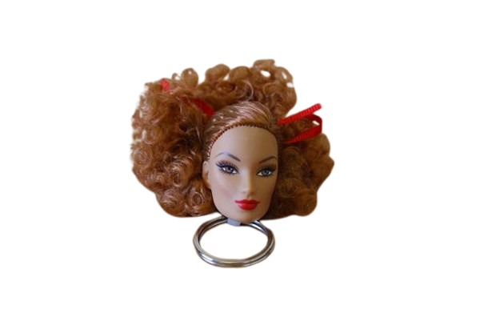

KILLER PROFILE
CRIME SCENE EVIDENCE

REPERTO B: LA BAMBOLADietro la maschera affascinante e rassicurante di Rudy Cooper, protesista medico specializzato nel ridare arti a chi li ha perduti, si nasconde in realtà Brian Moser: il serial killer metodico e spietato che tiene in scacco l'intera Miami Metro PD durante la prima stagione.
Brian non è un assassino qualunque per Dexter Morgan; è il suo legame di sangue più profondo, il fratello maggiore biologico dimenticato dal quale è stato separato dopo aver vissuto lo stesso identico, traumatico evento: il brutale omicidio della madre all'interno di un container di spedizione, immersi nel sangue.
A differenza dei comuni criminali, l'Ice Truck Killer trasforma le sue scene del crimine in macabre installazioni artistiche, pensate come un macabro gioco di indizi rivolto esclusivamente a Dexter.
Il Taglio Chirurgico: Grazie alle sue profonde conoscenze anatomiche, smembra i corpi delle sue vittime con precisione clinica assoluta.
L'Assenza di Sangue: Svena completamente i cadaveri prima di farli a pezzi, congelandoli per evitare qualsiasi tipo di traccia biologica sulla scena del crimine.
La Provocazione: Dispone i pezzi anatomici in luoghi pubblici iconici, lasciando messaggi codificati e oggetti che richiamano l'infanzia condivisa con Dexter, nel tentativo di risvegliare i suoi ricordi rimossi.
Mentre Dexter è stato adottato da Harry Morgan e "addestrato" a canalizzare i suoi impulsi attraverso un codice morale, Brian è cresciuto abbandonato a se stesso nelle istituzioni psichiatriche, lasciando che il suo "Oscuro Passeggero" prendesse il controllo totale.
Il suo inserimento nella vita dei protagonisti è calcolato al millimetro: seduce e si fidanza con Debra Morgan, la sorella adottiva di Dexter, non per amore, ma per avvicinarsi a suo fratello e offrirgli l'unica cosa che ha sempre desiderato: la totale accettazione della loro natura mostruosa.
"Non puoi nasconderti da me, Dexter. Siamo nati nello stesso sangue."